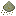
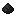

Items — Nuclear Science
Référence complète de tous les items du mod. Cliquez sur une catégorie pour y accéder directement.
Publicité
Matières radioactives
| Item | Nom | Description | Utilisation |
|---|---|---|---|
 |
Uranium-235 | Isotope fissile de l'uranium. Hautement radioactif. | Fabrication de combustible HEU, centrifugeuse |
| Uranium-238 | Isotope non-fissile majoritaire. Radioactif. | Blindage, retraitement | |
 |
Yellowcake | Oxyde d'uranium brut issu du minerai. Radioactif. | Étape intermédiaire vers l'hexafluorure |
 |
Plutonium-239 | Matière fissile très radioactive produite par retraitement. | Combustible au plutonium, générateur radioisotopique |
| Tétroxyde de plutonium | Forme oxydée du plutonium. | Retraitement avancé | |
 |
Polonium-210 | Isotope extrêmement radioactif à courte demi-vie. | Générateur radioisotopique (très efficace) |
| Morceau de Polonium-210 | Forme brute du polonium avant traitement. | Retraitement en Polonium-210 | |
 |
Poussière fissile | Déchet de la centrifugeuse. Légèrement radioactif. | Retraitement en matériaux utiles |
 |
Sel fissile | Sel radioactif intermédiaire. | Fabrication du sel LiF-ThF4-UF4 |
 |
Poussière de thorianite | Minerai de thorium broyé. Faiblement radioactif. | Fabrication du sel fissile MSR |
| Actinium-225 | Isotope radioactif rare issu du retraitement. | Retraitement avancé | |
| Trioxyde d'actinium | Forme oxydée de l'actinium. | Retraitement avancé |
Publicité
Combustibles
| Item | Nom | Temp. max | Utilisations | Description |
|---|---|---|---|---|
 |
Barre HEU Hautement enrichie |
1 417 °C | 96 000 | Combustible le plus puissant. Risque de fusion élevé sans barre de contrôle. |
| Barre LEU Faiblement enrichie |
1 075 °C | 24 000 | Combustible standard, plus sûr mais moins puissant. | |
| Barre au plutonium | 1 075 °C | 120 000 | Longue durée de vie. Nécessite du Plutonium-239 pour la fabrication. | |
 |
Barre usée | — | — | Résidu après épuisement d'une barre. Radioactif. Retraitable en matériaux utiles. |
| Sel LiF-ThF4-UF4 | — | — | Combustible fissile du réacteur MS. Se fond en 250 mB par pastille dans le fournisseur. | |
 |
Sel FLiNaK | — | — | Sel de refroidissement du réacteur MS. Non consommé. Plus il y en a, plus le réacteur dissipe de chaleur. |
Cellules
| Item | Nom | Description | Utilisation |
|---|---|---|---|
| Cellule vide | Conteneur de base pour les fluides et gaz. | Remplissage en deutérium, tritium, eau lourde… | |
 |
Cellule de deutérium | Deutérium compressé. Produit dans l'électrolyseur. | Combustible réacteur à fusion, production de tritium dans le réacteur à fission |
 |
Cellule de tritium | Tritium produit dans le réacteur à fission actif. | Combustible réacteur à fusion (avec deutérium) |
| Cellule d'eau lourde | Eau enrichie en deutérium. | Électrolyse pour produire du deutérium | |
| Cellule électromagnétique | Capture le résultat d'une collision de particules. | Accélérateur de particules — obligatoire pour récupérer antimatière/matière noire | |
| Cellule antimatière (500 mg) | Antimatière en petite quantité. Extrêmement instable. | Fabrication de cellules plus grandes, assembleur atomique | |
| Cellule antimatière (4 g) | Antimatière en quantité moyenne. | Fabrication avancée | |
| Cellule antimatière (12 g) | Grande quantité d'antimatière. | Fabrication de fin de partie | |
| Cellule de matière noire | Matière noire captée lors d'une collision à 100 % de C. 12 utilisations. | Assembleur atomique — duplication d'items |
Publicité
Protection contre les radiations
| Item | Nom | Description |
|---|---|---|
 |
Casque Hazmat | Protection de la tête. Partie de la combinaison complète requise pour bloquer les radiations. |
 |
Torse Hazmat | Protection du torse. Absorbe les radiations au détriment de sa durabilité. |
| Jambières Hazmat | Protection des jambes. Nécessaire pour la protection complète. | |
| Bottes Hazmat | Protection des pieds. Complète la combinaison Hazmat. | |
| Casque Hazmat renforcé | Version renforcée avec plus de durabilité. | |
| Torse Hazmat renforcé | Version renforcée avec plus de durabilité. | |
| Jambières Hazmat renforcées | Version renforcée avec plus de durabilité. | |
| Bottes Hazmat renforcées | Version renforcée avec plus de durabilité. | |
| Comprimé d'iode | Protection temporaire. Absorbe jusqu'à 1 000 Rads pendant 5 min. Réduit toujours les dégâts même au-delà du seuil. | |
 |
Antidote | Supprime immédiatement l'effet de radiation. Extrait des poissons. |
| Bidon plombé | Permet de réparer la combinaison Hazmat dans une enclume. |
Outils
| Item | Nom | Description | Utilisation |
|---|---|---|---|
 |
Compteur Geiger | Mesure l'exposition aux radiations en temps réel. Émet un clic dans l'inventaire si radiation détectée. | Détection de radiation — consomme 100 J/tick actif |
| Carte de fréquence | Stocke des coordonnées (clic droit sur un bloc). Shift+clic droit pour effacer. | Liaison de téléporteurs, programmation inter-dimensions |
Divers
| Item | Nom | Description |
|---|---|---|
| Porte plombée | Porte blindée offrant une protection contre les radiations. |
Publicité